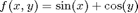
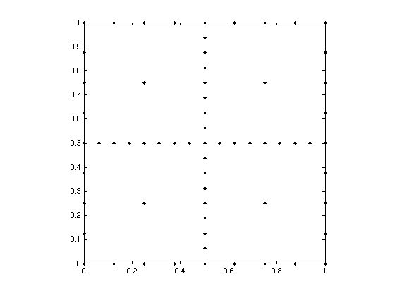
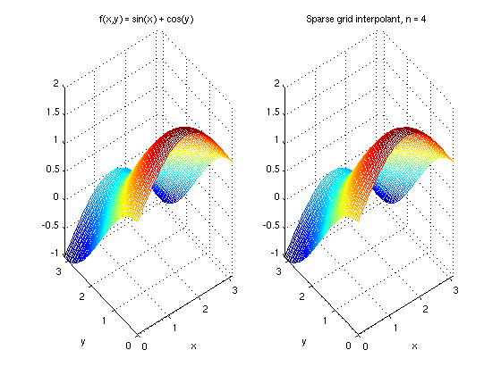

A first example
Let us interpolate a simple two-variate function

with the default settings of the sparse grid interpolation package. Here, we interpolate the function for the domain [0,pi]x[0,pi].
Constructing the interpolant
First, we compute the hierarchical surpluses (i.e. the coefficients) of the interpolant.
f = @(x,y) sin(x) + cos(y); z = spvals(f,2,[0 pi; 0 pi])
z =
vals: {[65x1 double]}
gridType: 'Clenshaw-Curtis'
d: 2
range: [2x2 double]
maxLevel: 4
estRelError: 0.0063
estAbsError: 0.0188
fevalRange: [-1 2]
minGridVal: [0 1]
maxGridVal: [0.5000 0]
nPoints: 65
fevalTime: 0.0502
surplusCompTime: 0.0024
indices: [1x1 struct]
The function spvals returns these hierarchical surpluses, and also includes some additional information collected during the construction process of the interpolant. For instance, We obtain information on the estimated relative and absolute error. The number of sparse grid support nodes is provided, as well as the computing time for evaluating the function and computing the hierarchical surpluses. The surpluses themselves are stored under the field vals.
Computing interpolated values
To compute interpolated values, we can now use the spinterp function. To increase efficiency, multiple interpolated values can be computed at once. Below, we compute the interpolated values for five randomly chosen points and compare them to the exact function value by computing the maximum absolute error.
x1 = pi*rand(1,5); x2 = pi*rand(1,5); y = spinterp(z,x1,x2) error = max(abs(y - f(x1,x2)))
y =
1.7173 0.7210 0.2675 0.7701 0.5510
error =
0.0076
Visualizing the sparse grid
Let us now visualize the sparse grid. From the information returned by spvals, we see that the used sparse grid is of the type Clenshaw-Curtis, and the maximum level was 4. In two and three dimensions, we can easily plot the sparse grid with the plotgrid function. It takes the level and the dimension as input arguments. Optional is an options structure containing the sparse grid type, created with spset. The default grid type is the Clenshaw-Curtis grid, we thus do not have to specify the grid type here.
plotgrid(4,2)
Visualizing the interpolant
To visualize the original function and compare it to the interpolant, we can plot both functions, for instance, by using ezmesh.
subplot(1,2,1); ezmesh(f,[0 pi]); title('f(x,y) = sin(x) + cos(y)'); subplot(1,2,2); ezmesh(@(x,y) spinterp(z,x,y),[0 pi]); title('Sparse grid interpolant, n = 4');